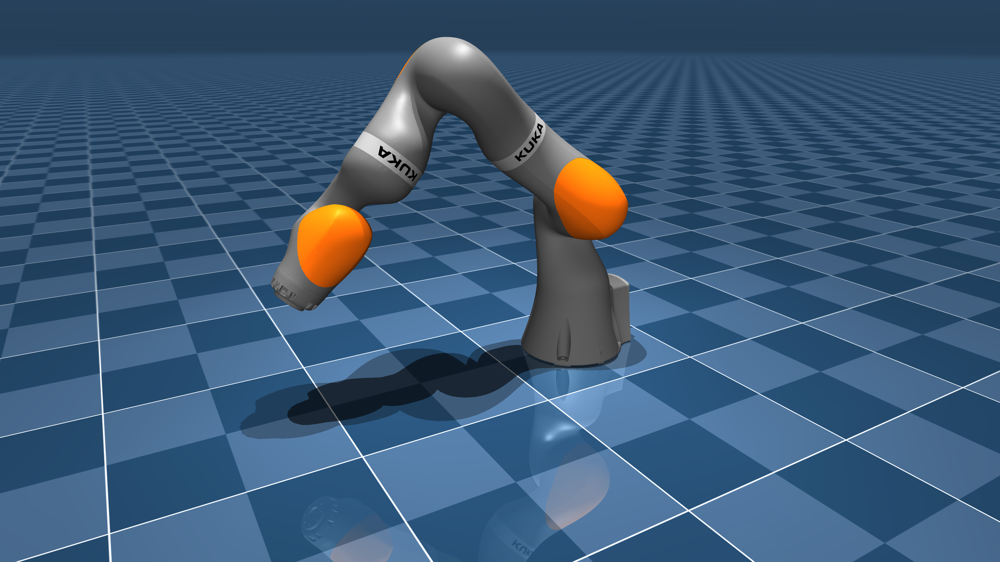

Projects
Dual Axis Solar Tracker (My BSc Thesis)
Bachelor Thesis Project
This project focused on designing and implementing an efficient dual-axis solar tracker system to maximize solar energy capture.
Key features:
- Innovative dual-axis tracking mechanism
- Hybrid control system for optimal performance
- Full rotation capability for increased efficiency
Technologies used: Arduino, C++, Mechanical Design
Trajectory Planning for a Deployable Under-Actuated Cable-Driven-Parallel-Robot
M.Sc. Final Project

This project focused on developing efficient Rest To Rest trajectory planning considering positve cable tension constraint for a deployable under-actuated cable-driven parallel robot.
Key achievements:
- Implemented novel trajectory planning techniques
- Optimized robot performance for various deployment scenarios
- Conducted extensive simulations and real-world tests
Technologies used: Python, ROS, MATLAB
TagSLAM-based Visual Kinematic Calibration for Eye Surgical Parallel Robot
Research Project
This project focused on developing a novel visual kinematic calibration method for an eye surgical parallel robot using TagSLAM technology.
Key achievements:
- Implemented TagSLAM for precise visual tracking of robot components
- Developed a kinematic calibration algorithm tailored for parallel robots
- Improved accuracy and reliability of the eye surgical robot
- Conducted extensive simulations and real-world tests to validate the method
Technologies used: ROS, TagSLAM, C++, Python, OpenCV
Impact: This calibration method significantly enhanced the precision of the eye surgical robot, potentially improving patient outcomes in ophthalmic surgeries.
Error Model on SE(3) Manifold
We employed an advanced error model defined on the SE(3) manifold to accurately represent and minimize the discrepancies between measured and fitted robot poses:
This error model allows for precise handling of both rotational and translational errors, crucial for the high accuracy demands of eye surgery applications. It provides a way to compute the difference between two poses in a geometrically meaningful way on the SE(3) manifold, accounting for the non-Euclidean nature of rotations.
A Graph-Based Self-Calibration Technique for Cable-Driven Robots with Sagging Cable
Research Project
This project introduces a novel graph-based self-calibration framework for large-scale Cable-Driven Parallel Robots (CDPRs), addressing cable sag effects and simplifying the calibration process.
Key features:
- Unified factor graph incorporating a catenary cable model
- Iterative refinement of kinematic parameters
- Consideration of onboard sensor data and robot's kineto-static model
- Demonstrated applicability through Finite Element (FE) simulations
Technologies used: C++, Python, ROS, Factor Graph Optimization
GitHub Repository | Read the Paper
Abstract
The efficient operation of large-scale Cable-Driven Parallel Robots (CDPRs) relies on precise calibration of kinematic parameters and the simplicity of the calibration process. This paper presents a graph-based self-calibration framework that explicitly addresses cable sag effects and facilitates the calibration procedure for large-scale CDPRs by only relying on internal sensors. A unified factor graph is proposed, incorporating a catenary cable model to capture cable sagging. The factor graph iteratively refines kinematic parameters, including anchor point locations and initial cable length, by considering jointly onboard sensor data and the robot's kineto-static model. The applicability and accuracy of the proposed technique are demonstrated through Finite Element (FE) simulations, on both large and small-scale CDPRs subjected to significant initialization perturbations.
Index Terms: Cable-driven parallel robots, Kinematic calibration, Cable sag modeling, Factor graph, Self-calibration
KukaTools: Calibration tools for Kuka-iiwa14 in MuJoCo

Ongoing Research Project

This project implements robotics algorithms for the Kuka LBR iiwa 14kg robot using MuJoCo for simulation and visualization. It features a simplified robot description (MJCF) developed by mujoco_menagerie, with added C++ implementations of forward kinematics based on the product of exponentials method.
Key features:
- Simplified MJCF model of the LBR iiwa 14kg robot
- C++ implementation of forward kinematics using product of exponentials
- MuJoCo-based simulation and visualization
- Verification of kinematics calculations using MuJoCo
Technologies used: C++17, CMake, MuJoCo, GLFW3, Eigen3
Impact: This project will significantly reduce the time and resources required for calibrating Kuka robots by allowing users to perfect their calibration procedures in a simulated environment before applying them to physical robots.
Training A Biped Robot to Walk Using Reinforcement Learning

Research Project

This project focused on training a biped robot to walk using Deep Deterministic Policy Gradient (DDPG) reinforcement learning techniques.
Key features:
- Created a simulation environment for the biped robot
- Designed a comprehensive reward function for walking behavior
- Implemented DDPG algorithm for training the robot
- Successfully trained the agent to walk in a straight line
- Analyzed performance and stability of the learned walking gait
Technologies used:Matlab
Impact: This project demonstrates the potential of reinforcement learning in robotics, particularly in developing complex behaviors like bipedal walking. The techniques developed here can be applied to various robotic systems, potentially improving their adaptability and performance in real-world scenarios.
Arastronaut: An Open Source UWB/IMU Hardware and Software For Indoor Positioning
Research Project
Arastronaut is an open-source platform integrating hardware and software components to achieve high-precision indoor positioning. The system leverages Ultra-Wideband (UWB) technology for ranging, while incorporating an Inertial Measurement Unit (IMU) to enable future sensor fusion capabilities.
Key features:
- Utilizes cost-effective components: ESP32 microcontroller, UWB transceiver, and IMU
- Implements Two-Way Ranging (TWR) with Time Division Multiple Access (TDMA)
- Incorporates sensor-specific calibration algorithms for enhanced accuracy
- Features a sophisticated graphical user interface (GUI) for user accessibility
- Demonstrates potential for centimeter-level indoor localization
Technologies used: ESP32, UWB, IMU, C++, Python
Abstract: Arastronaut is an open-source platform integrating hardware and software components to achieve high-precision indoor positioning. At its core, the system leverages Ultra-Wideband (UWB) technology for ranging, while incorporating an Inertial Measurement Unit (IMU) to enable future sensor fusion capabilities. The system utilizes readily available, cost-effective components including an ESP32 microcontroller, A UWB transceiver, and an IMU. The architecture prioritizes real-time operation and modularity for flexible tag/anchor deployment. Currently, the software implements Two-Way Ranging (TWR) with Time Division Multiple Access (TDMA) for precise distance measurement and robust time synchronization. Furthermore, it incorporates sensor-specific calibration algorithms for enhanced accuracy. A sophisticated graphical user interface (GUI) has been developed to facilitate user accessibility, streamline calibration processes, and enable seamless data fusion for sensor fusion applications. Initial experimental results validate the performance of individual UWB and IMU modules, demonstrating the platform's potential for centimeter-level indoor localization and paving the way for future integrated sensor fusion implementations.